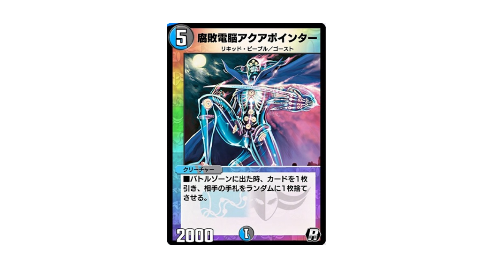

7弾環境でハンデスが流行らなかった謎を考察
ハンデスが重要な環境だと思ったのに
7弾環境もそろそろ終わり……もうすぐ8弾環境が訪れる。
思えはアポロヌス・ドラゲリオンの猛威から始まり、それを除去するためのインフェルトゲートサファイア、フェニックスを搭載したグレートメカオー、コントロールを制圧するグールジェネレイド、全然勢いを失わないツヴァイランサーが台頭した。
さらに環境が煮詰まってくると、再び環境に返り咲くダイヤモンド・ブリザード、カチュアシュート、そしてヘブンズ・ゲート。
多様なデッキが入り乱れメタが日々入れ替わる、非常に面白い環境だったのではないだろうか。
そんな中、個人的に7弾カードリストが公開されたときから疑問に思っていたことがある。
あれ？この環境、ハンデスにかなり弱いのでは？
先に出した結論を言ってしまうと、
- 環境が高速化し不確定なランダムハンデスでは対処できない
- リソース確保に長けた進化元が多いせいでハンデスが有効ではない
- 切り札のハンデスに成功したところで場の進化元に制圧されがち
ということになった。
ハンデスが活きるとき
ハンデスとは"Hand Destruction"、つまり手札破壊戦略のちょっとかっちょいい言い回しである。
手札枚数が非常に重要なデュエルマスターズでは、このハンデス戦略はいつも重要な立ち回りをしてきた。
使われると非常に厄介な強力カードを相手の手札にあるうちに墓地に落とすことができれば、有利にゲームを進めることができる。ボルメテに苦しみ、先行ロストソウルに苦しみ、ボルバルに苦しみ、天門に苦しみ……。相手が使ってくる理不尽な環境カードたちを、コモンカードで撃ち落とす快感。ハンデスとは環境の抑止力であると同時に、プレイヤーの「あいつ今度はぜってぇぶっ倒す……」という暗い感情の象徴なのだ。
どんなカードも手札にあるうちはただの1枚のカードでしかないので、何でも墓地に落とせるハンデスは万能な戦略のように思えるが、しかし実際はそうでもない。
- ハンデスは自分のハンデスカード1枚と引き換えに相手の手札1枚を破壊するので、基本的なアドバンテージは±0
- 相手のカードを本当に封じきるなら、継続してハンデスし続ける必要がある
- 既に場に出てしまったカードには対応できない
- ハンデスを逆手にとり、墓地利用されることがある
- ハンデスに反応してコスト踏み倒しで場にでるクリーチャーがいる
ハンデスデッキを組んでよく陥るのが、「手札破壊に夢中になりすぎてこちらの手札もいつの間にか尽きている」、「デッキがハンデスカードだらけで攻撃できるクリーチャーが不足する」といった状況だと思う。結局稼いだテンポも、いつかは相手が切り札を引き当てて負ける。
つまり、ハンデスは闇雲にするというよりも、タイミングをうまく見ておこうなう戦略であるといえる。
例えばハンデスカードの代表格<<ロスト・ソウル>>は、たった1枚で相手のカードを全て破壊することができるアドバンテージの塊だ。ただ使うだけでは自分の勢いも殺す<<ゴースト・タッチ>>などのハンデスと違い、たった1枚使うだけで勝敗を決することができる。
やっていることが強いのはテキストを見ればわかるが、その使用タイミングも絶妙に調整されていて、デッキのカードを回しこんだ終盤に使うから相手が嫌がる。タイミングを見ればたった1枚で相手の手札を0枚にできるので、デッキに入れすぎて全体のカードパワーが下がることもない。

デュエプレで改造された<<アクア・ポインター>>も非常に強力なハンデスカードだろう。ハンデスすると自分の勢いも落ちるという共通の弱点を、1枚ドローしながら場にクリーチャーも残すという効果で帳消しにしている、メリットの塊だ。
いつ使っても得をするが、5コストから使えるというのも非常に考えられていると思う。ハンデスの理想としては紙版<<解体人形ジェニー>>のように、相手の手札を見てその中から使われると困るものを指定して破壊することだが、デュエプレではそうもいかない。
となると、相手が少ない手札の中に切り札を持っている状況で一発ハンデスをかますというのが、特に相手が嫌がる動きになる。相手がそんな状況になるのが、大抵フェアリー・ライフでブーストしたりクリーチャーを並べて手札を消費した5ターン目付近なのだ。紙版のドラゴンデッキは特にこの状況に陥りやすく、ハンデスデッキが刺さる理想の相手だったといえる。
ハンデスが刺さる条件は整っているのでは？
さて、前置きが長くなったが、本題の7弾環境になぜハンデスが通用しなかったかについての考察に移りたい。
既に多くの方々が語っているように、7弾環境のデッキは「1枚で戦況を変える切り札を如何に相手より早く出すか・それを防ぐか」の戦いだったように思う。
ブリザード・天門などは別として、
- たった1体でシールドを全て割りダイレクトアタックまでもっていくドラゲリオン
- 厳しい手札をやりくりし、G0で場に出て勝負を決めるツヴァイランサー
- リソースを稼ぐメカオーを展開し、逆転を許さない2大フェニックスで制圧するセイントマザーとギガブリザード
- 状況に応じて強力なドラゴンを踏み倒してくるカチュア
これらのデッキは核となる切り札が強力だが、進化元はそれほどでもない（リソースの稼ぎ方がえげつないことはあとでわかるが……）。紙の方の経験だと、ハンデスを繰り返し手札のドラゲリオンやツヴァイランサーを墓地に落とすことができればわりと攻略はできそうだなと初見では感じた。（ジェニーを当てやすそうだし）
上記のように5ターン目付近の進化元を並べ終え、切り札をサーチしてきたところをアクアポインターやジェニー、デモニックバイスで狙うことができれば高確率でハンデスが活きそうだ。
一方で<<グール・ジェネレイド>>、<<インフェルノ・ゲート>>という強力な墓地利用カードの存在が気がかりで、これらをハンデスデッキで攻略するのは難しいそうだとも感じた。
また、<<サウンドシューター>>や<<ウー・ワンダフォー>>、<<ザークピッチ>>の提督サイクルも実装されており、運営からも決してハンデスが軽視されていたわけではないようにも思える。
継続してアドバンテージを稼ぎ続けるコントロールには分が悪いものの、強力な1枚を場に出すタイプのコンボデッキはハンデスの格好の的ではないか。
そう思っていた。
リソース確保が早い安いうまい
この自分の見立てをもとに、7弾初期には<<百発人形マグナム>>を入れてカチュア、グールジェネレイド、インフェルノゲートの踏み倒しをメタりつつ、アクアポインターやガレックでハンデスを行う除去コントロールでランクマッチに挑んだ。
結果としては、常にこちらの手札の除去札が先に尽きて、ジリ貧で負けるという結果に終わってしまった。
※今となってはまあまあの謎構築で、除去サファイアにはもっといいレシピがたくさんあります
ドラゲリオンはルピアからのセンチネルの展開にバルケリオスドラゴンのG0が加わり、とても1ターンで対処できない。
メカオーはピラミリオン、ガトリンガーがたった1枚で数枚のアドバンテージをとってくるので、除去もハンデスも追いつかない。
ツヴァイランサーには勝ち目があるが、こちらが除去デッキだと見越してギガブリザードの早期召喚に回られると勝てない。
カチュアは一度でも場に出てしまうとサファイアが脅威すぎる。ランダムハンデスではとても狙えるものではない。
ダイヤモンド・ブリザードには速度とリソースの稼ぎようにまるで対抗できず……
せめて同型の除去サファイアには勝ちたかったところだが、カードをハンデスにまわしている分除去が追いつかず、しかもゲートサファイアの決定力が強すぎて今引きのインフェルノゲートで負ける。
良いところなしである……。
解体人形ジェニーがピンポイントで切り札を狙えなくなった以上、フェニックス相手にハンデスを仕掛けるとしたら、4ターン目以降は常に1/2だか1/3のギャンブルに勝ち続けながら除去をしなければならない。どう考えても無理だ。
そもそも除去サファイアすら環境から退きつつある状況で、ハンデスを絡めたデッキは中途半端に終わってしまった……。
大型クリーチャーを召喚するにはマナブーストしてサーチを行い、手札を消費してやっと召喚できるというのが不死鳥編くらいの紙のデュエマだったが、デュエプレではもはや手札をそれほど消費せずに大型を出せる。こりゃむりだ
インフェルノゲートとサファイアのコンボを搭載した除去サファイアが環境から追いやられたのが7弾環境のびっくりポイントなのだが、海月さんのnoteとミケガモさんのブログがわかりやすく解説してくれているので、ぜひ読んでもらいたい。
デュエプレNEW環境考察(1/13~) 海月さんのnote
特にND環境でのクローシス除去サファイアの項と天門の項が、除去コンの立場をわかりやすく解説してくださっています。
【デュエプレ】強くなった超神星 ＆ 7弾広報担当への提言 ミケガモのブログデュエプレのフェニックスがなぜここまで強いのかをわかりやすく解説してくださっています。
結論としては、環境が高速化し不確定なランダムハンデスでは対処できない、リソース確保に長けた進化元が多いせいでハンデスが有効ではない、切り札のハンデスに成功したところで場の進化元に制圧されがち
という点が、7弾環境でハンデスがそこまで流行らなかった理由なのではないかと考察する。
こうして暗い欲望は散った
デュエプレでは4弾、5弾環境で「ハンデスボルバル」という8割以上をハンデスに振った除去デッキが猛威を振るい、その影響で<<ゴースト・タッチ>>や<<汽車男>>といった汎用ハンデスカードが下方修正を受けた。
さらに<<メテオキャノン・ドラゴン>>が登場し、得意だったドラゴンデッキがむしろハンデスに耐性をつけるようにもなった。4弾環境はハンデスがあまりに強すぎて、天門かハンデスボルバルしかランクマッチにいない地獄のような環境だったので、そこに殿堂と調整を入れてくれたことには異論はない。
ただ、いつも環境の抑止力として機能していたハンデスがまさか7弾環境でこんなにも減るとは思いもしなかった。誰もがパックから引き当てたお気に入りのスーパーレアを妨害されることなく使えるのは、良いことではあると思う。そのおかげで環境は多様性を増し、どんなデッキを使っても勝ち続けることは難しいやりがいのあるゲームになってくれた。
自分だって普段は速攻デッキを使うので、ハンデスとマッチングしないのは素直に嬉しいし心の底ではあいつは敵だと思っている。
しかし……
一方で、カードパワーで猛威を振るうドラゲリオンやツヴァイランサー、セイントマザーたちに愛用のドリームメイトが為す術もなく散っていく状況にふと、ハンデスの存在を思い出すことがあるのだった……。